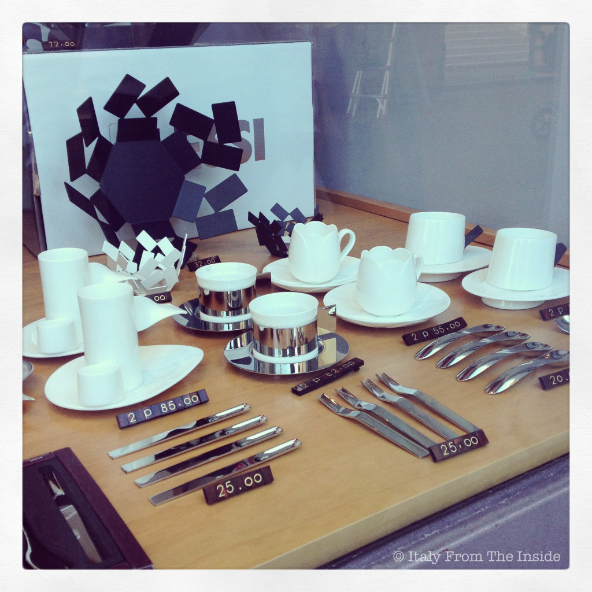

Maybe only a few of you know that I'm a total design geek, especially when it comes to Italian design and even more when it comes to the Italian brand Alessi. You can be 100% sure that if a store displays some Alessi items, I stop, no matter what. Then I start drooling over the most beautiful and timeless pieces the design industry has ever produced, wishing I could buy them all. Or at least one at the time (...like the tall ones on the left- Paolo, do you read this??)